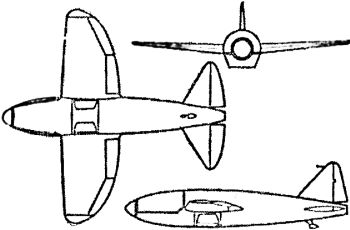

Ракетопланы фирмы «Хейнкель»
В то время как Вальтер Дорнбергер и Вернер фон Браун отрабатывали «ракетное» направление, конструкторы Люфтваффе всерьез подошли к решению проблемы создания самолетов с воздушно-реактивными и ракетными двигателями, делая в металле то, о чем писал и мечтал Макс Валье.
Как мы знаем, главной особенностью жидкостного ракетного двигателя (ЖРД) является его способность развивать большую тягу в течение короткого периода времени. Чрезвычайно высокий расход топлива ограничивает его применение в качестве основной силовой установки для самолета, но ЖРД может быть использован как силовая установка в тех случаях, когда необходимо получить большую скорость полета, не считаясь с его продолжительностью.
Уже в первой половине тридцатых годов в Германии фирмой «Хейнкель» был построен экспериментальный самолет «Не-112» («Heinkel»), на двух экземплярах которого проводились испытания ракетного двигателя «А-1» конструкции Вернера фон Брауна.
Машина предназначалась только для изучения принципа реактивного движения, и первые результаты оказались более чем.скромными. Собственная скорость «Не-112» составляла 300 км/ч и увеличивалась до 400 при включении реактивной тяги. В процессе дальнейших испытаний самолет показал максимальную скорость 458 км/ч, но разбился при очередном полете.
Двигатель «А-1» имел существенный недостаток — отсутствие регулировки тяги, что препятствовало его использованию в качестве самостоятельной силовой установки самолета.
В то же время появилась новая конструкция ракетного двигателя «ТР-1» на перекиси водорода, разработанная Гельмутом Вальтером. Следующий двигатель этой серии «ТР-2» уже имел регулятор тяги.
Это позволило фирме «Хейнкель» начать работу над созданием самолета «Не-176», оснащенного только ракетным двигателем. Работы под управлением Ганса Регнера начались в конце 1937 года.

«Не-176» был достаточно небольшим самолетом с сильно зализанными аэродинамическими формами. Передняя часть фюзеляжа представляла собой целиком остекленную и сбрасываемую кабину (предшественница современных катапультируемых кресел), а в хвостовой части размещался двигатель «ТР-2», к тому времени получивший официальное название «Walter HWK R.I. 203». Кроме этого самолет имел убирающиеся шасси. Без топлива машина весила 1570 килограммов, а в снаряженном состоянии — 2 тонны ровно.
Первый полет этого ракетоплана состоялся 20 июня 1939 года и продлился 50 секунд, а скорость составила всего лишь 273 км/ч (против проектной в 750 км/ч). Несмотря на все старания инженеров фирмы «Хейнкель», «Не-176» так и не удалось разогнать выше скорости в 346 км/ч.
Несмотря на неудачную конструкцию, «Не-176» использовался как образец для закрытых авиационных показов, на которых присутствовали руководители Третьего рейха, и сошел со сцены лишь будучи вытесненным более поздними машинами, значительно превосходящими его по своим характеристикам.
В конце войны в фирме «Хейнкель» велись работы по совершенствованию истребителя «Не-162», на базе которого был предложен целый ряд проектов, оставшихся невоплощенными.
Например, самолет «He-162D» представлял собой серийный образец «Не-162В», оснащенный пульсирующим двигателем «As014» (которые, как мы помним, устанавливались на снаряды «Фау-1»). Для обеспечения взлета истребителя применялись сбрасываемые стартовые ускорители. Этот самолет предполагалось вооружить двумя пушками «МК-103» калибром 30 миллиметров.
На конкурс по созданию перехватчика с ракетным двигателем фирма «Хейнкель» также выставляла два своих проекта: Р.1068 «Romeo» и Р.1077 «Julia». Незначительно различаясь в размерах и некоторых деталях конструкции, оба предложенных варианта представляли собой одноразовые малоразмерные пилотируемые истребители с пушечным вооружением, оснащенные ракетными двигателями. Однако победа в конкурсе осталась за проектом фирмы «Бахэм».